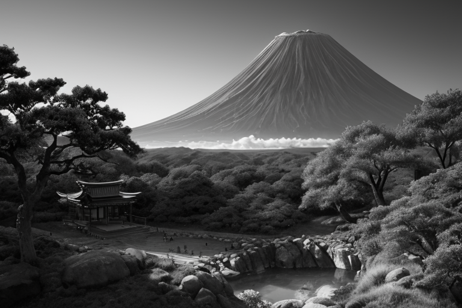
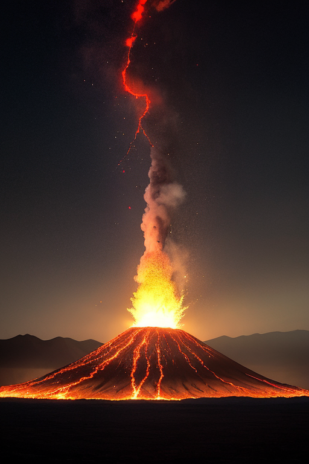
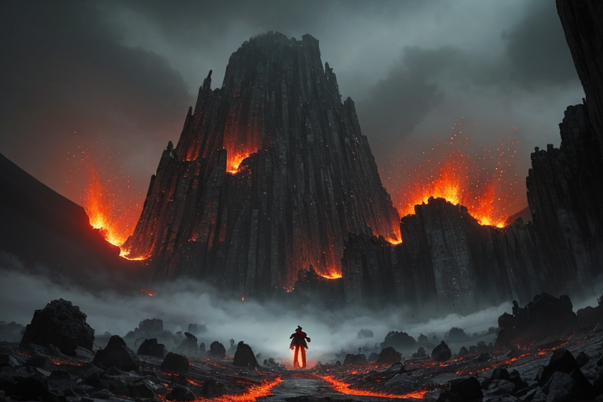
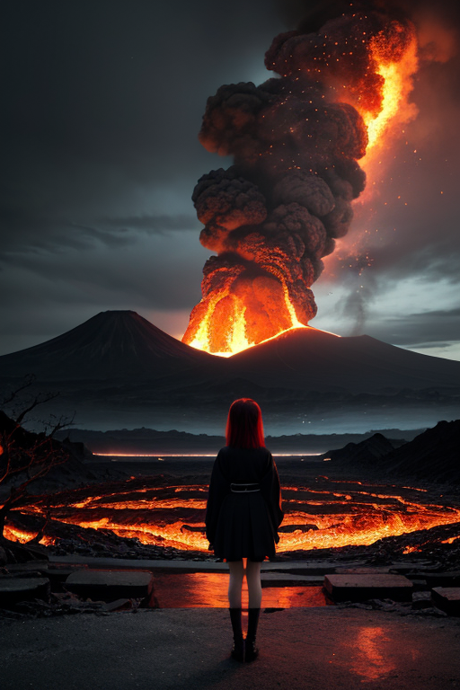
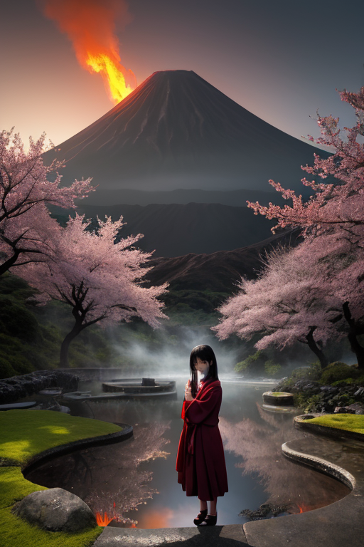

第一章 現実の鹿児島
あなたはまだ気づいていない。この土地にも、王がいることを。
桜島は今日も静かに煙を吐いていた。錦江湾を隔てた鹿児島市の街並みから見れば、それはあまりに日常的な風景である。観光客がシャッターを切るその巨大な山体は、しかし「噴封印」という世界線において、本来の姿ではない。地底に封じられた膨大な熱と力が、妖精たちの絶え間ない均衡作業によって、かろうじてこの穏やかな噴煙という形に収められているに過ぎない。
仙巌園の庭を流れる水は冷たく、磯の松の枝ぶりは風雅だ。だが、その庭園を造った島津家の歴史は、革命と破壊の連続であった。明治維新の原動力となり、やがて西南戦争という内戦の炎で自らの地を焦がす。変革は、常に創造と破壊の両義を孕んでこの地に降り立つ。
霧島神宮の深い森の静けさは、ただの平穏ではない。神々しくも重い、封じられたものの気配が苔むした石段に滲み、杉の古木に宿っている。人々は黒豚のしゃぶしゃぶを味わい、芋焼酎を酌み交わす。その何気ない日常の底で、何かが、ゆっくりと目覚めようとしている。

第二章 歪みの兆候
仙巌園から望む桜島は、今日も穏やかに煙を吐いていた。観光客の笑い声が聞こえる。しかし、王サツマリア・リボルトには、見えていた。あの噴煙の襞に、ほんの一瞬、本来あるべきでない「乱れ」が走るのを。地熱均衡を司る妖精リボルナが、顎をしゃくった。「御前、これは……」
「ああ、知っている」王は低く応じた。手に持った薩摩切子の杯を透かして桜島を見つめる。杯の底で、赤い火精サクラジマナが不安げに揺らめいていた。世界の歪みを調整する結界に、微細なほころびが生じ始めている。それは物理的な亀裂ではない。この地に積もった「覚悟」の重み――維新の熱量、そして西南戦争の無念が、長い時間を経て、封印そのものを侵食し始めているのだ。
「調整を強化せよ」王の命令は静かだった。だが、その目には、封じ込められてきたこの地のエネルギーそのもののような、熱い決意が灯っていた。破壊か、創造か。その答えは、まだこの島の深部で、炎のように眠っている。

第三章 王の葛藤
霧島神宮の森は、いつにも増して深い静寂に包まれていた。サツマリア・リボルトは、苔むした巨岩の前に佇み、地底から伝わる微かな鼓動を聞いていた。それは、桜島のマグマ溜まりの律動とは異なる、より古く、より重い脈動だ。西南戦争で散った者たちの無念、維新という変革の名の下に切り捨てられたものたちの嘆きが、長い歳月をかけて地層に染み込み、一つの「意志」のようなものを形成しつつあった。
「このままでは、『歪み』そのものが目覚めてしまう」
リボルナの声には、妖精らしからぬ焦りが滲んでいた。彼女の役目は地熱の均衡を保つことだが、今、彼女が感じているのは熱ではない。冷たく淀んだ、感情の堆積物だった。
王は目を閉じた。解放すれば、この鬱屈は爆発的に噴出するだろう。それは確かに「破壊」だ。しかし、このまま封じ続けることは、この地の本質である「反骨」と「革新」のエネルギーそのものを枯渇させる「創造」の否定ではないか。彼の内側で、王としての責務と、この地の声を代弁したいという衝動が激しく軋んだ。彼の手のひらには、自らの意思ではない、黒と赤の炎がちらついていた。

第四章 妖精との対話
「あなたは、もうお気づきでしょう。」
リボルナの声は、仙巌園の反射炉跡に響く風よりも冷たかった。彼女は、かつて薩摩が近代化へ向け鉄を溶かしたその炉心のような場所に立っていた。
「この封印は、単なる抑圧ではない。『力』そのものの暴走を防ぐ、均衡の器です。」
サクラジマナが静かに続ける。その目には、桜島の山肌を流れた無数の溶岩の記憶が揺らめいていた。
「西南戦争。あの熱は、維新という創造の後に訪れた、あまりに苛烈な破壊でした。この地の反骨は、自らをも焼き尽くす炎と化した。我々は、その二度目の噴出を封じたのです。」
革命王は己の掌を見つめた。ちらつく炎は、この地の誇りであり、傷痕であった。
「では、今の鬱屈は何だ？」彼が問う。
「創造への胎動です。あるいは、次の破壊の予兆。」リボルナは答えた。「器が満ち、次の形を求めている。それを解放するか、新たな器を作るか。それが、あなたに問われている『革命』の本質です。」
風が止んだ。跡地には、答えの代わりに、重い静寂だけが残された。

第五章 微調整と余韻
知覧特攻平和会館の庭。静かな水音だけが流れる。革命王は、噴火口を封じた右手を、庭の池に浸した。水が黒く濁り、熱を帯びる。彼は、この地に蓄積された「次の破壊」の予感を、自らの器に移し替え、微かに分散させていた。桜島のマグマだまりの圧力を、0.1パーセント減圧する。次の噴火の規模を、ほんの少し、人間の対応が間に合う範囲に収めるための、静かな作業である。
「これが、今のわしにできる『革命』か」彼は呟いた。かつて薩摩が成した変革は、旧いものを破壊した。しかし、この島の地熱は、破壊と創造の両輪で回る。完全な封印は、次の創造を阻む。彼は感情を持った。故に、完全なる破壊も、完全なる創造も、選べない。ただ、その狭間で、微調整を続けることしか。
手を引き上げると、掌の炎の痣は、以前より深い赤になっていた。代償である。リボルナが無言で彼の横に立つ。答えは出ていない。ただ、問いを抱えながら、次の揺れに備えて、地熱の均衡を計る日々が続く。破壊か創造か。その答えは、彼がこの地で生き、やがて散るその時まで、未完のままかもしれない。
あなたの町にも、王がいる。